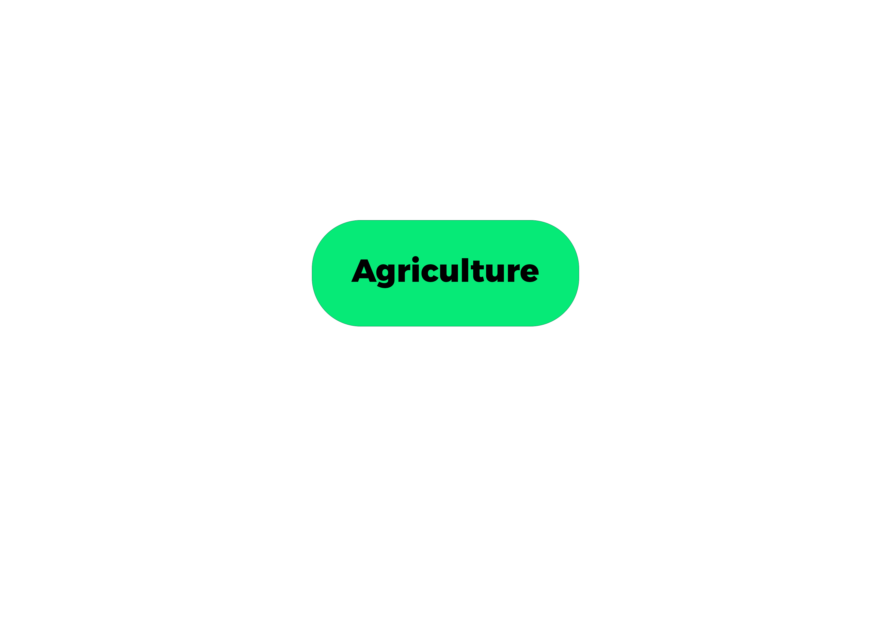

|
|
|
|  |  |
Aquaculture, the farming of aquatic organisms such as fish, shellfish, and aquatic plants, holds immense promise for Africa's food security, economic growth, and environmental sustainability. Across the continent's diverse water bodies, from freshwater lakes to coastal regions, aquaculture is emerging as a vital component of efforts to meet the growing demand for protein-rich food sources. However, realizing the full potential of aquaculture in Africa requires navigating a complex landscape of challenges and opportunities.
Diverse Aquatic Resources:
Africa boasts a rich array of aquatic resources, including the vast expanses of the Nile River, the pristine waters of Lake Victoria, and the fertile mangrove ecosystems along its coastlines. These diverse environments provide fertile ground for aquaculture operations, supporting a wide variety of species with potential for cultivation. Tilapia, catfish, carp, and shrimp are among the most commonly farmed species, alongside indigenous species such as African catfish and Nile perch.
Addressing Food Security:
Aquaculture has the potential to play a significant role in addressing food security challenges across the continent. With Africa's population expected to double by 2050, the demand for protein-rich food sources is rapidly increasing. Aquaculture offers a sustainable solution, providing a reliable source of nutritious food while reducing pressure on wild fish stocks. By harnessing the productivity of aquaculture, African nations can enhance food security, alleviate poverty, and improve nutrition outcomes for millions of people.
Challenges and Constraints:
Despite its potential, aquaculture in Africa faces a range of challenges that hinder its growth and development. Limited access to finance and investment capital constrains the expansion of aquaculture enterprises, particularly for small-scale farmers. Inadequate infrastructure, including access to water, electricity, and transportation networks, poses logistical challenges for aquaculture operations, especially in remote and rural areas.
Additionally, disease outbreaks, water pollution, and environmental degradation are significant threats to aquaculture sustainability. Poorly managed aquaculture practices can lead to habitat destruction, water quality degradation, and the spread of diseases, undermining the long-term viability of the industry. Addressing these challenges requires coordinated efforts from governments, industry stakeholders, and civil society to promote responsible aquaculture practices and ensure environmental stewardship.
Unlocking Opportunities:
Despite these challenges, there are significant opportunities to unlock the potential of aquaculture in Africa. Governments and international organizations are increasingly recognizing the importance of aquaculture for economic development and food security, leading to increased investments and policy support for the sector. Innovative technologies, such as recirculating aquaculture systems (RAS) and integrated multi-trophic aquaculture (IMTA), offer sustainable solutions for intensifying production while minimizing environmental impacts.
Moreover, partnerships between public and private sectors, as well as collaboration with research institutions and academia, can foster innovation and knowledge exchange to drive the growth of the aquaculture industry. By harnessing Africa's abundant aquatic resources and embracing sustainable aquaculture practices, the continent can realize its potential as a global leader in aquaculture production and contribute to a more food-secure and prosperous future for its people.
Conclusion:
Aquaculture holds great promise for Africa, offering a sustainable solution to address food security challenges, promote economic development, and conserve natural resources.
By overcoming the barriers and seizing the opportunities that lie ahead, African nations can unlock the full potential of aquaculture to improve livelihoods, enhance nutrition, and build resilient food systems for generations to come.

Copyright 2024 by Nathan Kibatu